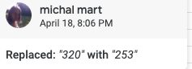

Some positive/negative anomalies
Issue number 187
gitjeff05 opened this issue on April 12, 2020 at 12:06 pm
While working on tests for cumulative (+/-) values, I encountered 4 anomalies in States Historical Data. There are some cumulative entries that are less than the value for previous date. This should never happen if values are cumulative.
I know the state websites are the “source of truth” but anomalies like this suggest that their public websites may have experienced a sort of regression and I wonder if we shouldn’t correct it or seek clarification? Anyways, I thought I would open the issue to at least document these somewhere:
RI
{
"date": 20200306,
"positive": 3,
},
{
"date": 20200305,
"positive": 2
}
WY
{
"date": 20200411,
"positive": 261
},
{
"date": 20200410,
"positive": 320
}
DE
{
"date": 20200411,
"negative": 9624
},
{
"date": 20200410,
"negative": 10415
}
WI
{
"date": 20200330,
"negative": 15856
},
{
"date": 20200329,
"negative": 16550
}
This issue has been automatically marked as stale because it has not had recent activity. It will be closed if no further activity occurs. Thank you for your contributions!
Hi @gitjeff05, Thanks for pointing these discrepancies out!
WI and DE: Since these numbers come directly from the states according to historical screenshots (DE + WI), we are going to leave as is and make a public note that the states revised down. WY: data on positives for 4/10 was a data entry mistake corrected down to 253 on 4/18, which fixed the problem.  RI: I think you meant the discrepancy between 3/6 and 3/7 rather than 3/5 to 3/6. There are no historical screenshots to investigate this data, so I think we should leave it as is and assume it was a revision down.
{kind=link}
{kind=link}
In the case Delaware, it appears that it may have been a regression on their part. Does the recorder take the highest value if there are multiple values for positive/negative on a single day?